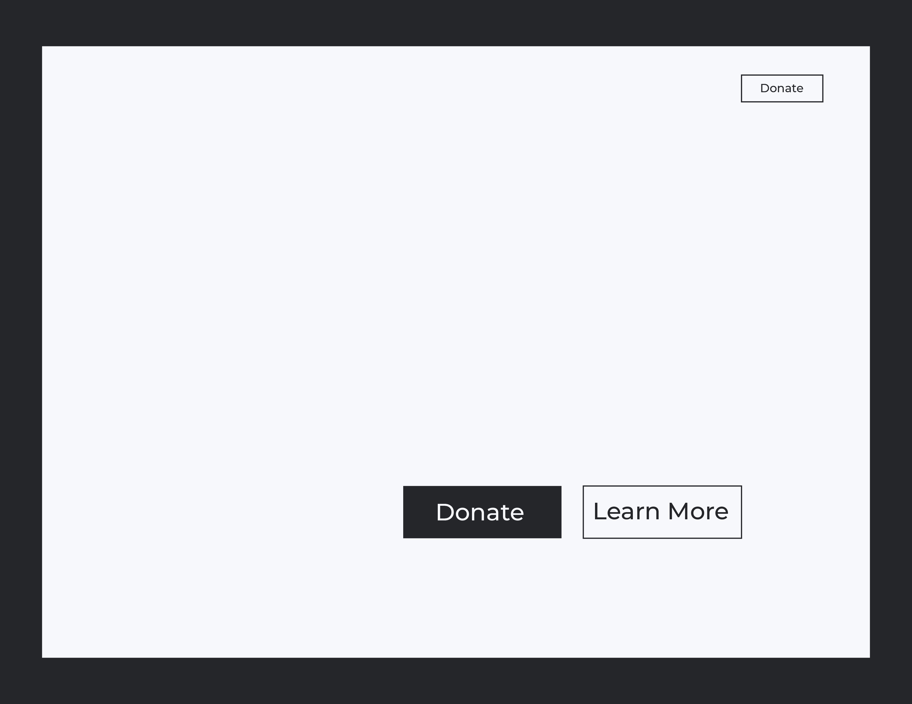

Solution
Call to Action
I determined that because the DCEC has two main target audience groups that there should be a call to action to suit each of their needs.
Primary Call to Action
As the main function of the DCEC's website is to elicit donations from the community, the primary call to action is the "Donate" button. The reverse text on the solid fill button provides the highest contrast on the main page drawing the viewer's focus immediately. The placement of the button will be on an image which creates an implied line from the subject to the button further directing the user. In addition to the main button there will be a second "Donate" button attached to the navigation. This reverse button will sit in the upper right corner on every page providing the audience with the ability to donate from any part of the website.
Secondary Call to Action
The "Learn More" button is the secondary call to action which will lead the viewer to the "Our Story" page providing them with information and history of the DCEC. This reverse button is a focal point second to the "Donate" button and works as such in the flow of vision on the main page. The "Learn More" button appeals to both audiences seeking and willing to give aid such as potential parents or donors who need more information before making a decision.
Style Tile
I created a style tile to communicate the sense of mood I want the website to emanate while providing a visual sample of layout.
Rebranding
This style tile reflects the character of my rebranded workmark. I chose to simplify the DCEC's existing logo to a simple wordmark in an effort to distance them from the generic charity realm and legitimize them in the eyes of donors and sponsers.
Typography
The pairing of a serif (Georgia) and a sans-serif (Montserrat) typeface work to establish the DCEC as an educational institution while conveying that they are a safe, loving and nurturing place.
Color Palette
The color palette was chosen to reflect the wonderous and inviting nature of the DCEC.
Imagery
The heavy use of imagery is to from the emotional connection between the website and audience leading them to action and so that they may see the children as the are—the smiling heart of a happy place.